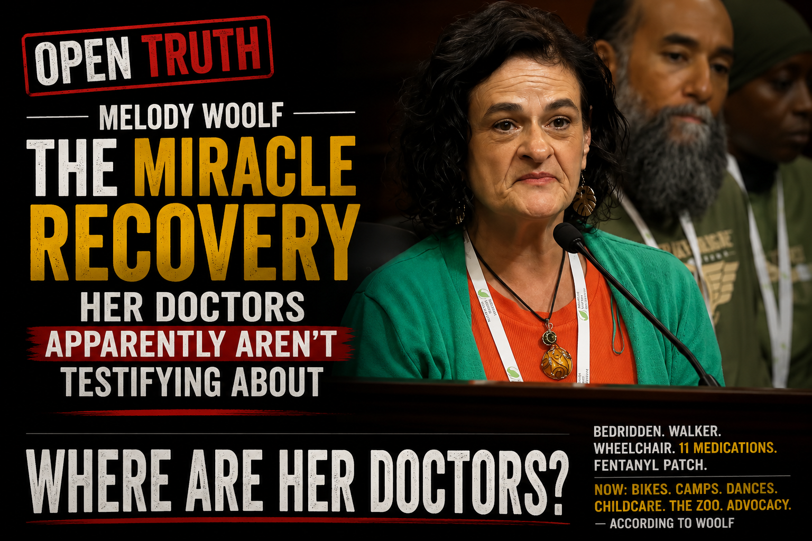

Melody Woolf has one hell of a medical story.
By her account, she went from profound disability to a level of recovery that would make a medical grand rounds presentation practically write itself.
Woolf told Congress that chronic pain left her bedridden, using a walker and sometimes a wheelchair. She sought care from Cleveland Clinic, University of Michigan Rheumatology, pain clinics and numerous specialists. At one point, she says she was taking 11 medications, including the strongest prescription fentanyl patch dose.
Then she found kratom.
And apparently somebody should alert the medical journals.
According to Woolf, the transformation was extraordinary.
She regained mobility.
She rides bikes.
She camps.
She danced at her son's wedding.
She provides childcare for her granddaughter.
She told Congress that she now pushes her granddaughter's stroller around the Detroit Zoo, the very same zoo where her children once had to push her around in a wheelchair.
Her earlier Bridge Michigan commentary paints the same remarkable picture: long bike rides, camping out West, dancing at the wedding and hours pushing her granddaughter around the zoo. 2022 Bridge Michigan column
Which leaves one rather awkward question.
Woolf says she spent years under specialist medical care.
Then kratom enters the story and the woman who once needed to be pushed around the zoo is pushing the stroller herself.
If this is the medical turnaround being presented to lawmakers, where are the treating physicians?
Where is the rheumatologist?
Where is the pain specialist?
Where is anyone with access to the before-and-after medical record saying:
Maybe that physician exists.
Nothing in the materials reviewed here establishes it.
And that's peculiar.
Because Woolf's recovery has apparently been impressive enough for Congress.
Just not, apparently, impressive enough to bring the doctor with the chart.
At an American Kratom Association congressional briefing, Woolf was introduced simply as "a kratom consumer from Michigan."
She explained her purpose herself:
At least that's refreshingly clear.
This isn't a medical case presentation.
It's lobbying.
And the miracle has traveled.
Woolf says she personally spoke with roughly 200 state legislators at an NCSL conference. Ohio testimony
Two hundred legislators have apparently heard about the recovery.
Still waiting on the treating physician.
Woolf's later testimony acquired some impressive institutional accessories.
She tells legislators she was the "only Kratom advocate in the country" welcomed onto an HHS press-briefing stage by FDA Commissioner Marty Makary. Ohio testimony
She also emphasizes attending the International Kratom Science Symposium at the University of Florida and speaking with leading kratom scientists. Ohio testimony
Fine.
But proximity is not a credential.
Attending a symposium doesn't make you a scientist.
Talking to scientists doesn't make their conclusions yours.
Standing on an HHS stage doesn't make your medical story an HHS finding.
The AKA's own congressional briefing actually got this right. First came the scientific panel. Then came "a group of kratom advocates," including Woolf.
Simple enough.
Then comes the jewel.
Woolf's Ohio testimony directs lawmakers seeking more information and "the science" to her LinkedIn profile. Ohio testimony
Woolf's recent advocacy also offers a remarkably tidy explanation for kratom's unpleasant headlines.
Her May 2026 Bridge Michigan column argues that the products behind alarming headlines and "devastating losses" aren't natural kratom leaf, but concentrated synthetic derivatives such as 7-OH. 2026 Bridge Michigan column
She finishes by telling Michigan lawmakers:
Very neat.
That's one hell of a division of labor.
Melody Woolf may sincerely believe kratom gave her life back.
Her story may be entirely sincere.
But if we're going to present it to lawmakers as evidence for drug policy, then treat it like the extraordinary medical claim it is.
Woolf says she went from years of specialist care, 11 medications, fentanyl, severe disability, a walker and a wheelchair to biking, camping, dancing, childcare and lobbying Congress.
That's not a modest improvement.
That's the kind of recovery physicians write case reports about.
So where is the case report?
Where are the medical records?
Where are the treating physicians?
Where is the doctor who watched this astonishing before-and-after unfold and is willing to testify:
Instead, we have Melody Woolf.
That's an impressive advocacy campaign.
But if this really is the medical miracle being sold to lawmakers, perhaps it's time for the miracle to undergo the most basic medical procedure imaginable:
Until then, Melody Woolf has one hell of a medical story.
What she doesn't appear to have in these materials is one hell of a physician standing behind it.
The documents below are presented so readers can review Woolf's statements in their original context. Descriptions summarize the contents; readers are encouraged to examine the underlying records directly.